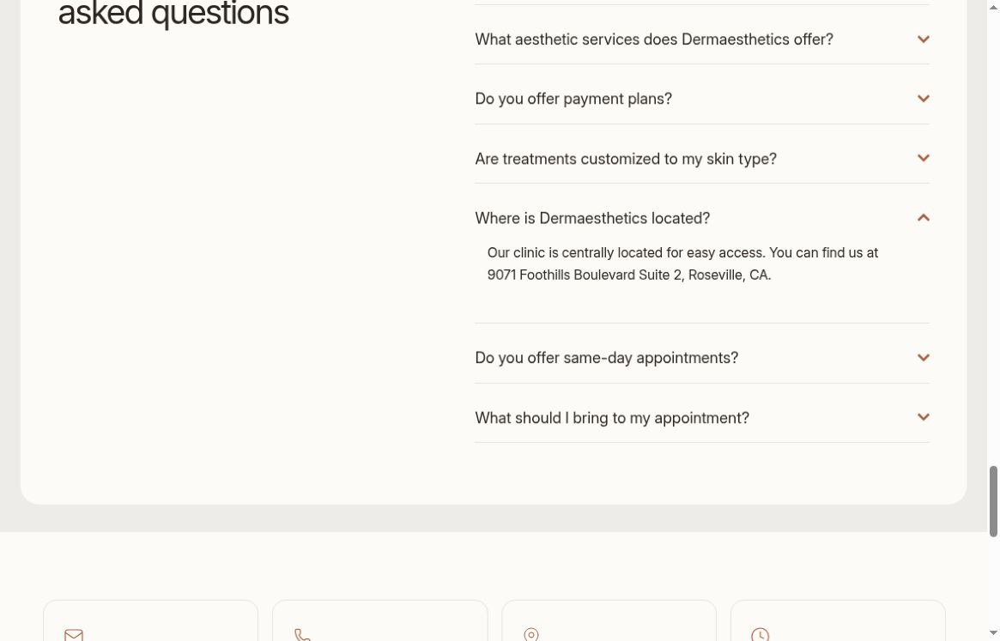

Direct scheduling route
Prominent buttons link to the practice’s Vagaro services page.
 Prepared for / DermaestheticsDiscuss the plan ↗
Prepared for / DermaestheticsDiscuss the plan ↗Your site explains the treatment menu, provides online booking and includes practical aftercare. Patients can already take a next step. We would make the clinic identity and location just as clear, then bring the real team into the story.
See the findings + our fixes ↘Specific public observations and fixes. Speed figures are one October 20 mobile lab run; field data is identified separately. Remaining checks are listed in the audit coverage.
The expanded homepage FAQ lists Foothills Boulevard. The footer lists East Roseville Parkway. Both were visible in the same live review.
Confirm the current patient location, update every page and align the booking service, Google profile and priority directories.
The homepage refers to licensed specialists and nurses without naming a clinician in its About or Expertise sections.
Add a verified provider introduction with role, credentials and an authentic portrait. Let patients understand who they will meet.
The fetched homepage has a title but no meta-description tag. Search engines may assemble their own summary from unrelated page copy.
Write a concise service-and-location description and validate consistent local-business information in structured data.
The Google profile’s website and booking links both lead to Vagaro. On the branded site, treatment buttons share one services-listing destination. The paths serve scheduling, but provide little treatment-specific handoff.
Use the branded site for Google’s website link and retain Vagaro for appointments. Where supported, use treatment-specific booking links and explain when a consultation should come first.
The homepage displays a combined five-star-review total without a source breakdown beside it. Visitors cannot easily identify the platforms or snapshot date.
Link the original profiles, label the source and date, and use consented stories with treatment context instead of an unexplained aggregate.
The October 20 mobile lab run scored 67/100, with an 8.5-second Largest Contentful Paint. It flags request discovery, caching and unused JavaScript. No real-user field dataset was available.
Prioritize the main visual and its request path, review unnecessary scripts and cache policy, and retest on the same mobile profile. Keep online booking reachable while the page loads.

Unaltered source capture. Public page state can change; the observation above describes this review session.
Open full capture ↗ AIMS Sports RecoveryVessel client work. Website, content and campaign case study.View the work ↗
AIMS Sports RecoveryVessel client work. Website, content and campaign case study.View the work ↗ Precision Home LoansClient work / Megan Meyerdick. Her Precision Home Loans client brand is shown.
Precision Home LoansClient work / Megan Meyerdick. Her Precision Home Loans client brand is shown.One connected plan for the website, production, campaigns and follow-up. The scope starts with the problems above.
Confirm the correct address and hours, reconcile the website and booking profile, and prepare priority listing corrections for approved access.
Plan a clinic session around the real provider, consultation and patient questions. Edit a coherent set of short social and ad-ready cuts.
Improve provider identity, service explanations and booking context. Validate the handoff into the supported Vagaro workflow.
Review current activity before launching anything. Match one agreed treatment to one page and report inquiries and bookings using available data.
Proposed work for discussion, not a production commitment. Final deliverables, access, publishing approvals and timing would be agreed together. Your team retains operational decisions, clinical review where relevant, permissions and customer / patient responses.
Bring the real expertise forward. Each concept has one question, one useful answer and one clear next step.
“What do we decide before treatment?”
A real provider explains the assessment, alternatives and individual suitability in clinician-approved language.
“Here is who you will meet.”
A warm introduction with verified credentials and an authentic tour of the clinic. No stock stand-in for the team.
“What should you know before leaving?”
A short, treatment-specific explanation based on the clinic’s approved aftercare instructions.
These are proposed concepts. Filming dates, volume, participants and reuse rights would be confirmed before production. All medical explanations and case stories require practice approval and appropriate consent.
Verify the foundations. Build the first useful journey. Learn from real inquiries before widening the scope.
Confirm location and provider details; fix the conflicting address; audit the treatment-to-booking route and map permissions.
Publish the verified provider section and first focused treatment page. Film and approve the first content set.
Run an agreed creative test once the journey is verified. Review appointment data, common questions and page improvements.
Public pages and conversion routes inspected in a cloud browser and fetched source. No form submitted. Real-device touch, keyboard and form testing remains a launch gate.
Fresh October 20 mobile lab result: performance 67/100; Largest Contentful Paint 8.5 s. Lighthouse 13.5.0, emulated Moto G Power, slow 4G, one initial page load. Lab results vary and are not a measured conversion impact. No field dataset was available in this report. October 20 source ↗
Google Maps showed 5.0 stars from 164 reviews at East Roseville Parkway. Both its website and booking links lead to Vagaro. The location matches the site footer, but not the FAQ. Checked October 20. Source checked Oct 20 ↗
The linked Instagram profile metadata lists 548 followers and 17 posts. Latest post dates were not exposed in the unauthenticated feed; current cadence remains to be confirmed. Source checked Oct 20 ↗
Public Meta Ad Library retrieval did not return usable results in this review. Current active ads, advertiser identity and destination URLs remain unverified; review the live library and accounts before changing campaigns.
A Meta Pixel reference is present in public source. Whether bookings return from Vagaro to analytics or advertising is unverified.
Visible entry routes and expectations inspected without submitting personal information. Confirmation delivery and staff response remain untested.
Sampled public copy, links and metadata reviewed. Search Console, index coverage and local map positions were not verified.
No repeatable ChatGPT / Google AI visibility benchmark was established. Test named prompts, location and dates before drawing conclusions.
Practice facts, clinical statements, filming permissions, source footage rights and any regulated advertising language require appropriate review before launch.
This is a public-information review, not an account audit or legal / clinical opinion. No access to private analytics or ad accounts was assumed, and no claim of lost revenue, guaranteed bookings, search position or universal technical failure is made. Timing depends on access, approvals and the agreed scope.
Choose the first treatment focus, verify the current address and provider details, and agree an authentic filming session. Those are the foundations for the first campaign.
Discuss the first scope ↗